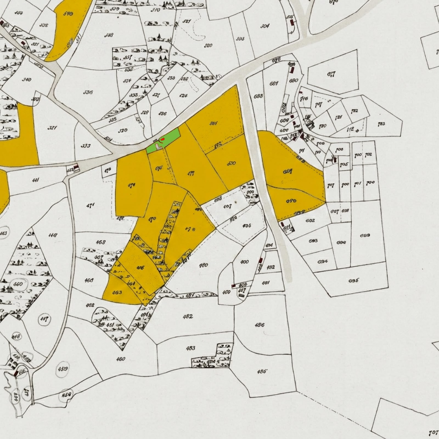
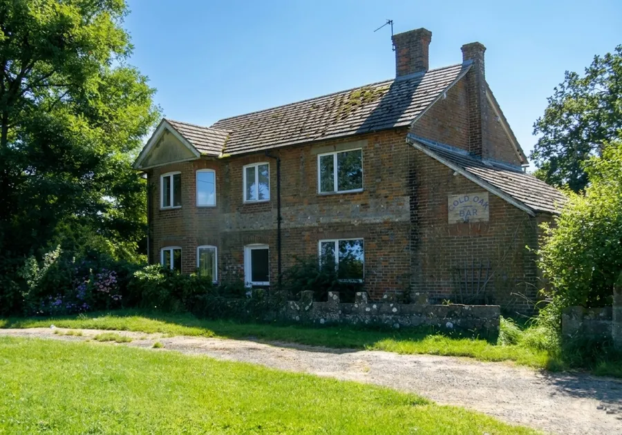
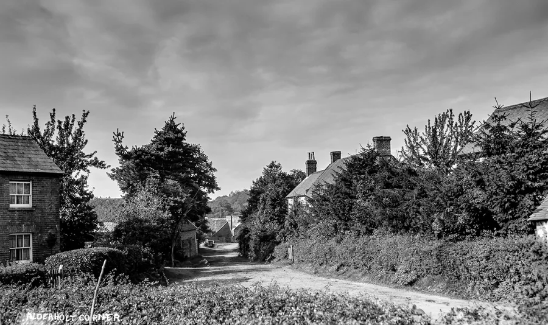
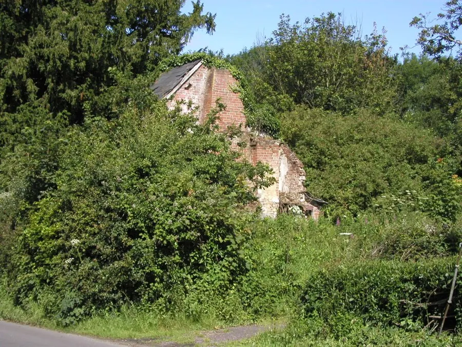
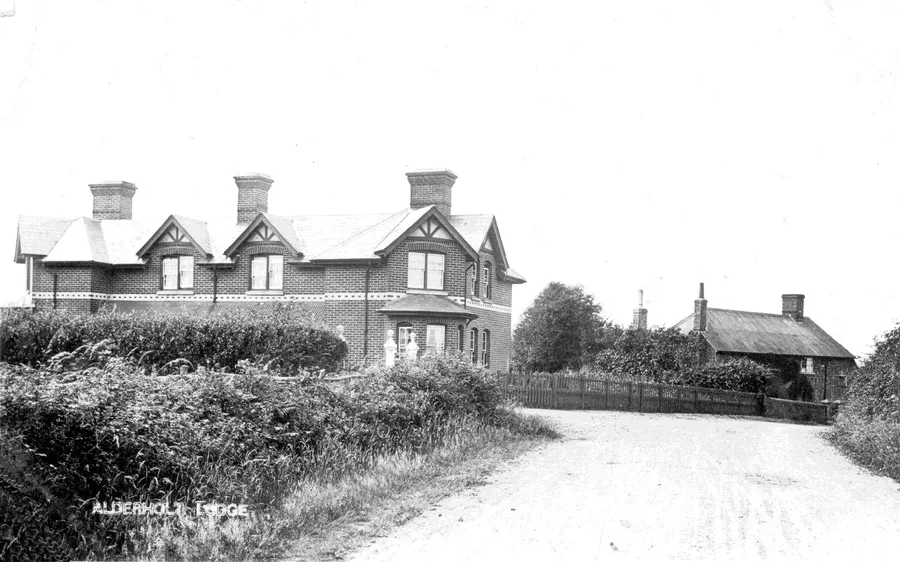
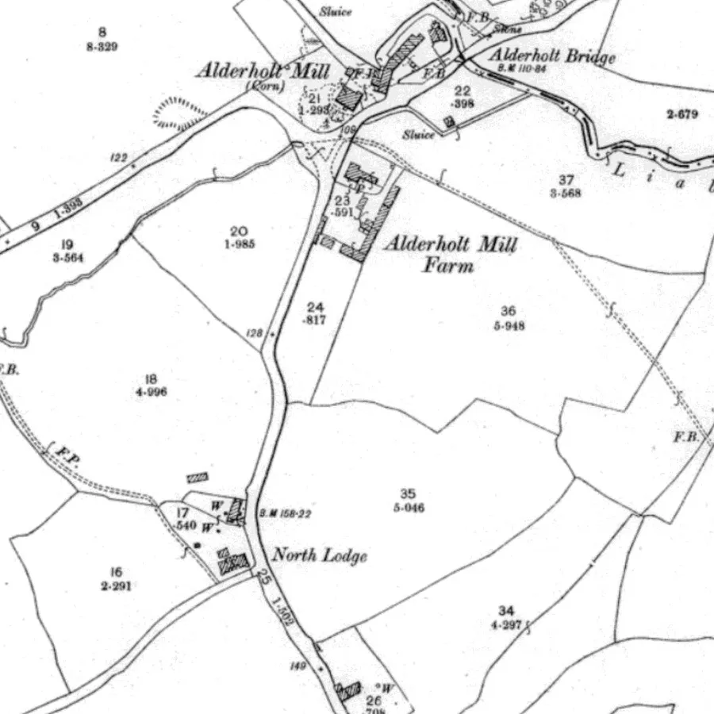
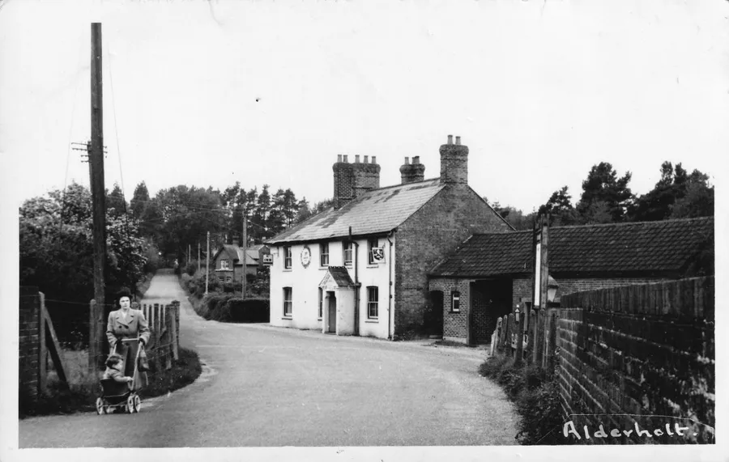
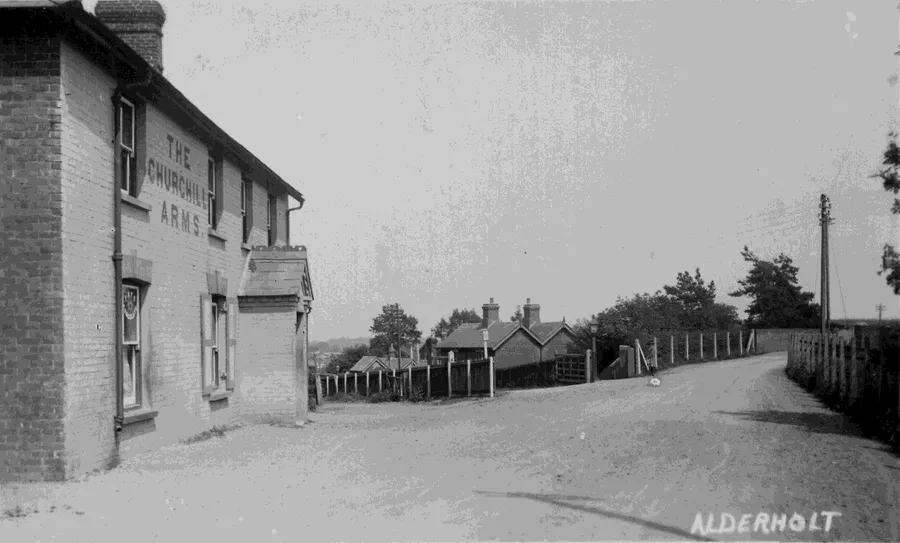

Disappearing Public Houses
by Adrian King

In 1891 the population of the parish was 696 and it supported at least five public houses — The Gold Oak Bar, The Red Lion, The Salisbury Arms, The New Inn and The Churchill Arms. There were also a number of beer shops where beer was not only sold but also brewed. These were unlicensed and beer was not permitted to be consumed on site. Confusion was caused as to where exactly the premises legally extended.
Today in 2026 the population of the parish is around 3000.
The Gold Oak Bar (SU0859912281)
Also known as Lower Hare Lane Farm, it was a bar at the edge of the parish on the road to Cranborne just above Roke Hill. Bells Estate owned tracts of land at Gold Oak Bar, Crendell and fields between Batterley Drove and Cripplestyle.

Until recently the words “Gold Oak Bar” could still be seen on the building, but recent rendering has removed the wording.

Now a farm, Gold Oak Farm has been owned by the Butler family for around 100 years.
The Red Lion (SU1249613297)
Red Lion Cottage on Fordingbridge Road near Wolvercroft was once a public house. Little more is known.
The Salisbury Arms. (SU1223913109)

The ruins of this Public House on Sandleheath Road at Pressey’s Corner stand in the grounds of Salisbury Arms Farm. In 2004 the ruins were still there but now the building is almost gone.

The New Inn. (SU1181614027)
This was a public house in Sandleheath Road then called Alderholt Street. It was said to have been a resort of smugglers. Possibly before 1850 the New Inn was changed into two cottages.

In 1889 George Churchill ordered these cottages to be pulled down and replaced them with two brick houses known as North Lodge after the death of his father also called George. When the work was being done it was hoped that treasure would be found.

The Churchill Arms - Hall & Woodhouse (SU1129012512)
This public house is the only one remaining in the parish and is situated near the old station. It was built in the 1870s and was named after George Churchill, the ‘Lord of the Manor’ and was originally called the Railway Inn.

Mrs. Philpot ran part of the Churchill Arms as a grocery shop. Loose sugar and sweets could be bought there. On 5th May 1982 it was badly damaged by a fire which had started in a bedroom.
Paul Henshaw built a swimming pool in the grounds in the 1990s, but it was filled in about 2001–2 due to Health and Safety requiring a lifeguard when the pool was being used. During his tenancy the back bar and the skittle alley were reworked.

When the property was refurbished in 2006 by Gary and Wendy Taylor the children’s room and part of the garden were sold.
Publicans of The Churchill Arms
| Name | Dates and Sources |
|---|---|
| KCxxxx = Kellys Cranborne, KAxxxx = Kellys Alderholt | |
| xxxxC = Census and FAxxxx = Fordingbridge Almanac | |
| Charles Philpott | KC1885, 1891C, KC1895 |
| Edgar Philpott | 1901C, KA1903–KA1927, 1911C |
| Mary J. Philpott (Mrs.) | KA1923, KA1931, KA1939 |
| Mary was also referred to as Mrs E Philpott | |
| E. Philpott (Mrs) | FA1933, FA1939, FA1940 |
| Kath and Sonny Blick | |
| Ted and Ivy Mare | 1960 |
| John and Sue Day | 1974 |
| Paul Henshaw | 1977 |
| Bridget and Bob Smith | 1996 |
| Gary and Wendy Taylor | 2003 |
| David and Una White | 2008 |
| Tanya Wynyard | 2011 |
The OS National Grid references (SU etc) can be viewed using Grid Reference Finder or the Ordinance Survey website.